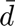
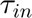
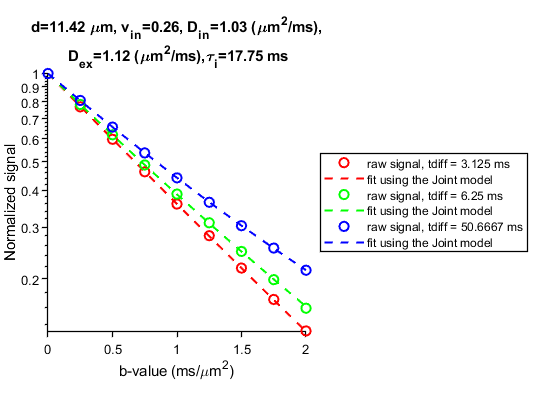

Example of performing JOINT model (IMPULSED + transcytolemmal water exchange)
This example shows how to simultaneously fit mean cell size  and intracellular water lifetime %  based on cultured cell data in vitro.
This script calls mati.JOINT and sample cultured cell data in vitro in the folder 'Data/cell'
Reference
The main reference that should be cited when using the code in this script is
- JIang J, et al. Simultaneous Quantification of Transcytolemmal Water Exchange and Mean Cell Size Using Temporal Diffusion Spectroscopy. (under review)
Comments or questions?
Please send your comments or questions to Xiaoyu Jiang (xiaoyu.jiang@vumc.org) or Junzhong (JZ) Xu (junzhong.xu@vanderbilt.edu)
Contents
Preliminary
clear variables % Set data folder and general parameters file_dir = fullfile('Data','cell') ; n_group=4; % from group 1 to 4, the CG-experiment-derived intracellular water lifetimes are 161.8, 157.8, 106.6, and 59.4 ms. n_sample=1; % for each group, there are six samples. % Load cell data try load(fullfile(file_dir, ['MEL_group' int2str(n_group) '_sample' int2str(n_sample) '.mat']),'signal','pulse') ; catch sprintf('no such data file...please check the group number and sample id') end % Select a subset of dMRI signal data. e.g., here, we only use 1 PGSE (gradient duration/separation=4/52 ms) + 2 OGSE (40 and 80 Hz) index = find(pulse.Delta~=35) ; pulse = pulse(pulse.Delta~=35) ; signal = signal(index); % Select a specific JOINT model structure.modelName = 'joint_vin_d_Dex_Din_kin' ; % set the fitting model structure.geometry = 'sphere'; joint = mati.JOINT(structure, pulse) ; % Create an ImageData object img(1,1,1,1:length(index))=signal; data = mati.ImageData(img,0) ;
Fit dMRI signals using a JOINT model
Create a FitPars object
fitopts.solverName = 'fmincon'; % {'lsqcurvefit' , 'lsqnonlin' , 'fmincon'} fitopts.options = optimoptions(fitopts.solverName,'Display','off') ; fitopts.noiseModel = 'none' ; fitopts.flag.multistart = 'y' ; fitopts.flag.parfor = 'y' ; fitopts.flag.deivim = 'n' ; fitopts.NumStarts = 5 ; fitpars = mati.FitPars(joint, fitopts) ; % Fit the model to data fitout = fitpars.Fit(data) ;
Display the fitting results
tdiff = unique(joint.pulse.tdiff) ; nf = length(tdiff) ; color = 'rgbkmcy' ; figure(1); signal_fit = joint.FcnSignal({fitout.vin, fitout.d, fitout.Dex, fitout.Din, fitout.kin}, joint) ; for i=1:nf index=find(joint.pulse.tdiff==tdiff(i)); plot(joint.pulse.b(index),signal(index),[color(i) 'o'],'linewidth',1.5,'DisplayName',['raw signal, tdiff = ' num2str(tdiff(i)) ' ms']); hold on;plot(joint.pulse.b(index),signal_fit(index),[color(i) '--'],'linewidth',1.5,'DisplayName','fit using the Joint model'); end title(sprintf('d=%0.2f \\mum, v_i_n=%0.2f, D_i_n=%0.2f (\\mum^2/ms),\n D_e_x=%0.2f (\\mum^2/ms),\\tau_i=%0.2f ms',fitout.d,fitout.vin,fitout.Din,fitout.Dex,1/fitout.kin)); set(gca, 'Box', 'off', 'TickDir', 'out', 'TickLength', [.02 .02],'LineWidth', 1); set(gca,'FontName','Aria','FontSize',10);pbaspect([1 1 1]); set(gca, 'YScale', 'log'); legend('location','EastOutside'); xlabel('b-value (ms/\mum^2)'); ylabel('Normalized signal') hold off;